イベントコマンド 【キー入力】
キーの入力を取得したり、ゲーム内から自動でキー入力させたり、キーの禁止・許可状態を変化させられます。
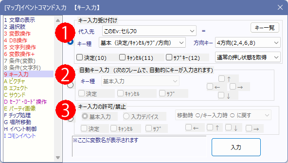
【ショートカット】
・キーボードのキーコード一覧
・ゲームパッドのボタン一覧
【注意点】
・「PrtScr(PrintScreen)」キーはウディタ上で受付できないことが多いです。
これは外部のソフトにキー入力が吸われてしまうことで発生し、ウディタ側でPrtScrを押しても受付されなくなります。
一時期、非常に利用者が多いであろう『OneDrive』というアプリにPrintScreenキーが吸われることがあり、ウディタ側での対応が困難でした。
→ こういった事情があるため、ScrollLockやPauseキーでもスクリーンショット撮影を可能にしてあります。
プレイヤーには、PrintScreenの挙動がおかしいときはこの2キーを使うようにうながすのがよいでしょう。
・キーボードによっては3～4キー以上同時受け付けできない、あるいは特定キーの組み合わせだけ受付されない場合があります。
これはデバイスに依存する問題なので、多くのユーザに遊んでもらう場合、多キーの同時押しを要求することは推奨できません。
【よくある状況】「←+↑」を押したままだと「ESC」「F6」「G」「H」「＊」「B」「N」「/」「＼」「テンキー0」「テンキー . (ドット/Del)」 が反応しない、など。
特に「左上+ESC」を要求すると問題になる可能性が高そうです。
【各機能の説明】
[キー入力受け付け]
このコマンドが実行された瞬間に押されているキーをチェックし、その対応した番号を変数に代入します。何もなければ0が代入されます。各部の説明は以下の通りです。
・キー種 … ３種類あり、それぞれ受け付けるキーが異なります。
| ・基本（方向/決定/ｷｬﾝｾﾙ/ｻﾌﾞ） 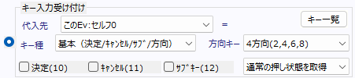 キーボード/パッドの方向キーおよび、決定キー(Enter/スペース)、キャンセルキー(Esc/Backspace/Delete)、サブキー(Shift)、 システム変数52～57で決定キー/キャンセルキー/サブキーに設定したキーコードのキーを受け付けます。 ・方向キー … 受け付け可能な方向キーを設定します。各方向の値は、以下のようにテンキーの番号と対応しています。
・決定キー/キャンセルキー/サブキー … 各々のキー入力を受け付けるかどうかを指定します。 ・通常の押し状態を取得 / 押されるまで【待つ】 / 新押し時のみ取得 / 離した時のみ取得 / 押し続けフレームを得る … どのモードで取得するか選択します。 (Ver3.50より) - 通常の押し状態を取得 … キーが押されているときはそのキー値を返し、それ以外は0を返します。 - 押されるまで【待つ】 … キーが押されるまでコマンド処理を進めません。指定キーが押されるとそのキー値を返します。 - 新押し時のみ取得 … キーが新たに押されたフレーム中だけそのキー値を返し、それ以外は0を返します。 - 離した時のみ取得 … キーが新たに離されたフレーム中だけそのキー値を返し、それ以外は0を返します。 - 押し続けフレームを得る … キーが続けて押されている長さをフレーム数として返します。複数のキーが指定されている場合、一番長く押されているキーの「押し続けフレーム」を取得します。 |
||||||||||||||||||||||||||||||||||||||||||||||||||||||||||||||||
|
・キーボード全キー （100～） 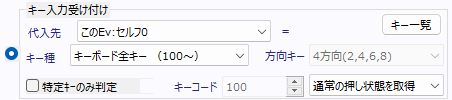 キーボードの全文字キーを受け付けます（基本は、下記画像で ● が付いてるキーのみ）。 受け付けたキーコードをシステム変数52～54のどれかに代入すると、システム文字列1～3を使ってキー名が確認できます。 ・特定キーのみ判定 … ここにチェックを入れると、キーコードで指定したコードのキーのみ受け付けます。 通常のキーボード全キー受付で取得できないキーコードも取得可能です （下記画像で ● が付いてないキー） キーボードとキーコードの対応は以下の図のようになります。 ※メインとテンキーのEnter共に本来は「128」だが、同時押しした後にメインのEnterのみ離すと「256」になる。 半角全角は「248」、ただしカナキーと同じく一度押すと常時押しっぱしになる。 PrtScrは「283」、Homeキーが「299」 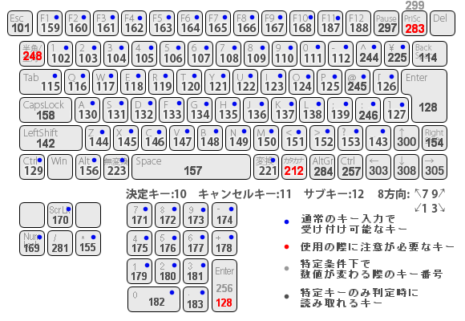 ○調査・画像提供 ： ナナミ 様 ※外部のソフトにキーショートカットが設定されている場合、ウディタ側でキー受付されない場合があります。特に「PrtScr」キーは他のソフトに入力を吸われてウディタ上で機能しない状況が多くなりがちです。 ※キーボードによっては3～4キー以上同時受け付けできない、あるいは特定キーの組み合わせが受付できない場合があります。 【よくある状況】「←+↑」を押したままだと「ESC」「F6」「G」「H」「＊」「B」「N」「/」「＼」「テンキー0」「テンキー . (ドット/Del)」 が反応しない、など。 特に「左上+ESC」は通常のプレイでも使用する可能性がありながら一般的なキーボードでは受付されないので、説明書などでそれを周知する必要があるかもしれません。 |
||||||||||||||||||||||||||||||||||||||||||||||||||||||||||||||||
|
・マウスクリック・座標 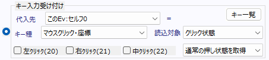 マウスの各種クリックの受付や座標の取得を行います。 ・クリック状態： 左・右・中クリックを受け付けます。 ・マウスX座標： マウスの画面内X座標を取得します。 ・マウスY座標： マウスの画面内Y座標を取得します。 ・ホイール回転： マウスの１フレーム中のホイール回転量を取得します。基本は-1～2、0、+1～2くらいの数値が入ります。 ※ただ一部のPC機種ではホイールに-100や+100以上の数値が入り続けてしまうケースがあるそうです。 |
||||||||||||||||||||||||||||||||||||||||||||||||||||||||||||||||
|
・パッドボタン（301～） 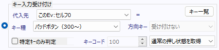 ゲームパッドの全ボタンを受け付けます。受け付けたキーコードをシステム変数55～57のどれかに代入すると、システム文字列4～6を使って「ボタン0～20」というキー名が確認できます。キーコード「301」なら「ボタン1」です。 【パッドの種類別の対応ボタン】 2024/01/17時点
※「SysS71：[読]ゲームパッドの種別」（システム文字列）で上記のパッドの種類を得ることが可能です。 ユーザーのゲームパッドに合ったキー表記で表示することで、より直感的に操作しやすくなるでしょう。 ※ゲームストアのSteamには「AとB」、「XとY」のボタンを入れ替えるオプションがあり、それがオンになっているプレイヤーにはこの通りに表記されない場合がありました。 ※Xboxコントローラーの「Xboxボタン」は、Xbox 360コントローラーの場合はどのボタンとしても認識しませんでした。 |
||||||||||||||||||||||||||||||||||||||||||||||||||||||||||||||||
| ・アナログスティック 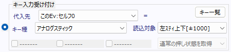 ゲームパッドの左右アナログスティックの状態受付を行います。 ・（左/右）スティック上下[±1000]： スティックの上下傾き度合いを-1000～+1000で得られます。 ・（左/右）スティック左右[±1000]： スティックの左右傾き度合いを-1000～+1000で得られます。 ・（左/右）スティック角度[0-3600/右が0]： スティックが傾いている方向を0～3600で得られます。右方向が0、時計回りで増えます。 ・（左/右）スティック傾き[0-1000]： 方向関わらず、スティックが傾いている量を0-1000で得られます。 Xboxコントローラなど、「斜めの最大の傾き」が900くらいにしかならない場合がありますので注意してください。 ・ZL/ZRトリガー[0-1000/一部非対応]： 背面トリガーを押し込んだ量を得られます。 ・Z軸値[±1000/Direct/XInput両用]： パッドの生パラメータです。XInputなら背面トリガー「両方」を押し込んだ量を足した値を±1000内で得られます。片方をいっぱい引くと+1000、もう片方いっぱい引くと-1000になり、両トリガーを同時にいっぱいまで引くと0になります。 DirectInputでは下のX/Y/Z回転と合わせ、各社別々の使い方をしていることがあります。 ・X/Y/Z回転[±1000/Direct/XInput両用]： パッドの生パラメータです。DirectInputではZ軸とこのXYZ回転を各社「右スティック」に割り当てていたり、「トリガー」に割り当てたりと別々の使い方をしています(Ver3.230より実装)。 ※Ver3.230より、システム変数「Sys146:DirectInputならPS/Swiｺﾝ準拠?=1(1推奨)」が1(デフォルト値)になっているときは「Xbox、PS4、PS5、Switchプロコン」などほとんどのコントローラで右スティックやトリガーが正常に読み込めるようになりました。 実は右スティックやZトリガー値は、「Z軸、XYZ回転」の4つの値を各社別々に割り当てています。それをウディタ側で自動で判別し、「右スティック」情報や「ZL/ZRトリガー値」として得られるようにしています。 |
||||||||||||||||||||||||||||||||||||||||||||||||||||||||||||||||
| ・POV十字キー 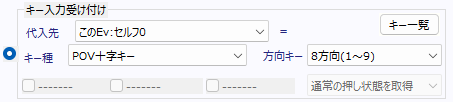 ゲームパッドの十字キー（POVキー）の状態受付を行います。 ・方向キー … 受け付け可能な方向キーを設定します。各方向の値は、以下のようにテンキーの番号と対応しています。
|
||||||||||||||||||||||||||||||||||||||||||||||||||||||||||||||||
| ・複数タッチ認識 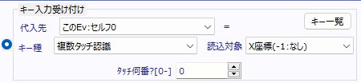 タブレット端末などでタッチ受け付けをするための機能でです。 ・タッチ何番？： 同時タッチのうち、「何番目」の値を取得するか指定します。1つめのタッチが「0番」となり、タッチされてない場合は-1の値が返されます。 【読込対象】 ・X座標（-1：なし)： タッチされたX座標を取得します。タッチがない場合は-1が返されます。 ・Y座標（-1：なし)： タッチされたY座標を取得します。タッチがない場合は-1が返されます。 ・追跡用ID（-1：なし)： 1タッチごとに1つの番号が割り振られ、タッチが離さない限り同じ追跡用IDを返します。 たとえば同じ「タッチ0番」でも、先にタッチした手を離したりすると順番が変わるため、そういった場合に同じタッチを識別するために使います。 追跡用IDは端末によって「0～押された順の数が常に返る、全部離すとまた0から」「9億から1ずつ減っていく」「数が増える」「値が循環する」など寄せられる情報がまちまちなので、とにかく「タッチしたら離すまでは同じ固有のIDが返される」と考えてください。 |
【自動キー入力】
「次のフレーム」のキー入力として、各種キー・マウス操作を自動で行うことが出来ます。
この機能の使用例としては、リプレイ機能を作りたいときや、ゲームのデモ画面を作りたいとき、
RPGをマウスでも操作させたいとき（※ただし受け付けは1フレーム=約0.017秒(FPSによる)遅れる）などに利用可能です。
なお、この機能で「キーボード」を入力すると、後述する「禁止」にしたキーでも入力を受け付けられますので、
ご注意下さい。プレイヤーの入力を不能にしつつ、ウディタ側だけでキー入力できるようにする目的です。
ちなみに「基本入力」を禁止した場合は、「自動キー入力」による基本入力も効かなくなります。
・キー種 … ３種類あり、それぞれ出力するキーが異なります。
| ・基本入力 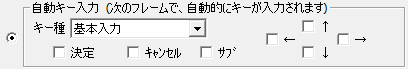 上記のキー入力（基本（方向/決定/ｷｬﾝｾﾙ/ｻﾌﾞ））と同等の出力版です。 |
|
・キーボード 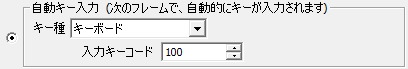 上記のキー入力（キーボード全キー（100～））と同等の出力版です。 ※【裏技】 『文字列操作』の「キーボード入力」中に「キーコード 128（Enter）」を自動キー入力すると 途中でキーボード入力を完了させることができます。 |
|
・マウス左・中・右クリック・座標 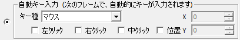 マウスの左・中・右クリックを自動で行う機能です。また、指定座標へマウスを移動することもできます。 |
【キー入力の許可/禁止】
決定・キャンセル・サブキー上下左右、および、キーボード/マウス/パッド入力のそれぞれの許可・禁止状態を切り替えることができます。
| ・基本入力 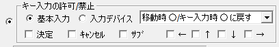 選択したキーに対し「常に受け付ける(ﾃﾞﾌｫﾙﾄ)」「移動時禁止・キー入力時だけ許可」「移動時もキー入力時も禁止」 の設定が可能です。 たとえば主人公のカーソルキーによる移動を禁止したいときは、 「上下左右」を選択し、「移動時禁止・キー入力時だけ許可」にすることで実現できます。 |
|
・入力デバイス 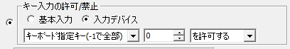 キーボードの各キー（1つずつ設定可）・マウス全部・パッド全部・全てのデバイスの入力を許可・禁止にできます。 |